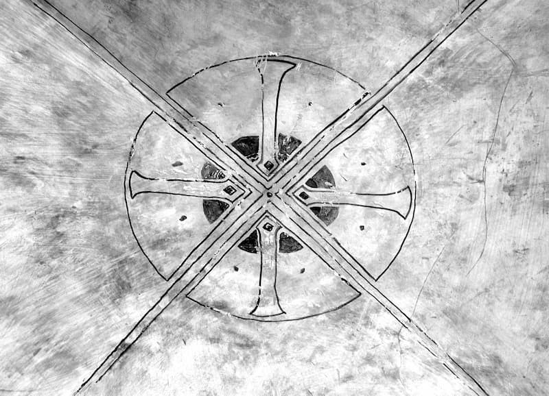

Pentru motive pe cari o să le înțelegeți mai târziu, nu am insistat ceva mai mult asupra afirmației că este imposibilă o determinare numai imanentă, subiectivă a actului religios. Am arătat, precum ați văzut, că actul acesta religios nu poate să fie conceput, nu poate să fie înțeles de noi și nici nu poate să existe în el însuși, dacă se face abstracțiune de un obiect asupra căruia actul religios se raportează și dacă anume nu se consideră acest obiect ca existență reală. Am recunoscut însă, către sfârșitul prelegerii, că numai o determinare obiectivă a actului religios, și anume că numai elementele obiective nu sunt suficiente pentru precizarea întru înțelegerea structurală a actului religios. Spuneam că, fără îndoială, punctul de greutate al cercetărilor acestora trebuie să cadă pe latura imanentă a acestui proces, în același timp, însă, făceam deosebirea, sau stabileam cel puțin în intenție, că nu trebuie să se confunde această cercetare, această latură imanentă a actului religios cu o cercetare propriu-zis psihologică.
Problema aceasta este una dintre cele mai însemnate în filosofia religiei, pentru că rezolvarea ei îndreptățește sau, în sfârșit, condiționează însăși posibilitatea de existență și posibilitatea de constituire a disciplinei acesteia asupra filosofiei religiei.
În adevăr, spuneam altă dată că dacă actul religios nu este decât un act psihologic oarecare, atunci evident că filosofia religiei, cel puțin în acest capitol, devine o psihologie religioasă; sau, cum am spune cu alte cuvinte, o psihologie, o cercetare a sufletului omenesc în momentul de viață religioasă a acestui suflet, dar o cercetare făcută în același cadru și pe același plan cu cealaltă cercetare de psihologie obișnuită.
Sunt foarte multe lucrări în materie de filosofie a religiei cari procedează așa; sunt, adică, cercetări cari stabilesc anumite facultăți ale sufletului omenesc.
D-voastră știți că această problemă a facultății sufletului omenesc a fost ieșită din modă în veacul al XIX-lea. Orice psiholog care voia să fie modern și științific, de câte ori auzea cuvântul „facultate” zâmbea cu milă. „Facultăți” sau „psihologie a facultăților sufletului omenesc” erau de un medievalism așa de înjositor, încât orice om binecrescut trebuia să se întoarcă cu scârbă. Se pare încă că, de la începutul veacului al XX-lea, a început să se vorbească în psihologie iarăși de facultăți, cari, însă, de data aceasta, însemnează grupe de funcțiuni sufletești (digresiunea aceasta poate să vă intereseze și în legătură cu alte studii); grupe de funcțiuni sufletești în înțelesul că psihologia experimentală sau psihologia științifică, care încercase să reducă viața sufletească la un proces de analiză a elementelor psihice, această psihologie nu a izbutit să explice anumite fapte sufletești de un ordin ceva mai complicat; adică, în psihologie complicat nu se reduce la simplu, ci complicatul are o formă structurală de sine stătătoare. Vasăzică, psihologia mult mai rafinată a veacului al XX-lea a ajuns la concluziunea că faptele sufletești nu se reduc pur și simplu la fapte elementare sufletești, dar că sunt unități de sine stătătoare, cari trebuiesc considerate și studiate în ele însele.
Vasăzică, odată cu introducerea, sau cu reintroducerea „facultăților” în domeniul psihologiei, unii dintre cercetătorii acestui domeniu al filosofiei religiei au crezut că pot descoperi, în afară de facultatea noastră de a judeca, în afară de facultatea noastră de a gândi, de a simți, de a cunoaște etc., au crezut că pot descoperi și altă facultate, anume facultatea aceasta religioasă, de a trăi un obiect în afară de noi, într-un plan oarecare de cunoaștere - obiect care se cheamă Dumnezeu. O facultate, deci, între celelalte facultăți, pe același plan de realități, în cadrul vieții cunoștințelor obiective.
Punctul acesta de vedere ar fi poate îndreptățit la prima vedere, dacă nu am constata că, totuși, actul religios și viața religioasă trebuie să fie propriu-zis altceva decât o facultate sau rezumatul unei facultăți a vieții noastre sufletești în genere; și anume, noi avem o facultate de a gândi, o facultate de a simți, o facultate de valorificare a lucrurilor bune sau rele etc.; dar, alături de toate aceste facultăți cari, în totalitatea lor, formează un organism, o unitate care ar fi unitatea de cunoaștere a sufletului nostru, în această unitate nu putem să introducem propriu-zis și actul religios și viața religioasă, pentru un motiv foarte simplu. Există o facultate de a cunoaște, dar există și o facultate a noastră religioasă de a cunoaște. Vasăzică, cunoaștem, și cunoaștem sub raportul religiunii; simțim, și simțim sub raportul religiunii; valorificăm în domeniul cunoștinței, dar valorificăm și din punct de vedere religios; și, ceva mai mult, trăim, avem o anume activitate în viață și avem o activitate specifică, regulată după principii luate tot din domeniul religios. Vasăzică, actul religios, în cazul acesta, nu mai este pur și simplu, nu se mai poate încadra pur și simplu în celelalte facultăți ale sufletului omenesc, ci formează oarecum o lume aparte, a sa proprie. Ei bine, tocmai această lume proprie, constituită de totalitatea actului religios este problema pe care trebuie s-o considerăm, încercarea noastră trebuie să meargă în primul rând spre stabilirea acestei afirmări precise: dacă credem că se poate constitui o disciplină a filosofiei religiei, atunci trebuie să-i găsim domeniul aparte în care ea lucrează, în care există. Deci, aceasta este problema centrală, fundamentală.
Vă făgăduisem să vă fac o expunere, ceva mai amănunțită, a câtorva dintre problemele filosofiei religiei - câte se vor putea face -, între altele și pentru motivul că aș dori ca în fața d-voastră să se perinde problemele așa cum ele au luat naștere din necesitatea constituirii într-un corp de doctrină. Vasăzică, ceea ce ne interesează aci, în afară de precizările sistematice, teoretice, este și drumul pe care-l urmăm pentru ca să ajungem la diferitele adevăruri și să expunem cu suficiență fundarea diferitelor adevăruri. Vasăzică, din acest punct de vedere și păstrând acest punct de plecare, vreau să fac astăzi un fel de analiză a drumului pe care avem să-l urmăm.

Problema care ni se pune am precizat-o adineauri: anume, să stabilim dacă există ceva specific religios și ce anume există ca specific religios, întru cât este îndreptățită existența unei filosofii a religiunii alături de psihologie; cari sunt factorii cari, adunați la un loc, constituiesc un domeniu aparte, care nu poate să fie tratat decât într-un anumit cadru și cu anumită metodă, care diferă de cadrul psihologiei, și metoda psihologică propriu-zisă. Aceasta este problema.
În primul rând, trebuie să stabilim că nu avem de-a face cu anumite fapte sporadice, ceea ce se întâmplă o dată să nu se mai întâmple a doua oară, ceea ce a încetat într-un anumit moment. Dar în sine, în afară de orice considerațiuni, în timp și spațiu, aceasta nu poate să constituie propriu-zis material pentru o disciplină aparte.
Indicam în lecțiunea trecută și repet și astăzi: pentru ca disciplina aceasta a filosofiei religiei să se poate constitui, noi trebuie să dovedim că actul religios, adică esența însăși a vieții religioase, actul acesta este constitutiv[*17] conștiinței umane în genere. Vasăzică, un punct pe care trebuie să-l dovedim este că actul religios este constitutiv conștiinței umane.
Acesta poate să fie un procedeu necesar, dar nu este încă suficient. Ce înseamnă constitutiv conștiinței umane în general? Sunt și alte acte, tot așa de constitutive; de pildă, actul de gândire. Dacă actul religios este constitutiv, aceasta însemnează că el există propriu-zis și mai înseamnă că el nu se poate să nu existe, că un prim material îl avem, există în viața noastră. Aceasta nu înseamnă însă că el este determinat și determinarea lui reclamă nevoia de a fi tratat într-un domeniu aparte. Vasăzică, faptul constituirii conștiinței umane, a actului religios este o condițiune necesară, dar nu este o condițiune suficientă. Ceea ce trebuie să facem imediat după aceasta este să căutăm, să urmărim și să găsim ceva care să deosebească acest act religios constitutiv al conștiinței umane de alte acte, și ele constitutive ale conștiinței umane, dar cari sunt tratate în psihologie. Vasăzică, trebuie să căutăm o anumită calitate a conștiinței umane, care să nu fie împlinită decât tocmai de acest act religios. Și atunci, ne gândim la ce este actul religios în el însuși; ne gândim, de pildă, la faptul pe care-l indicam de asemenea, că actul acesta religios păstrează toate caracterele actului - se știe din psihologie ce este un act, spre deosebire de un fapt - în general, adică are și caracterul intențional, se raportează la ceva din afară, dar constatăm că acest act are nevoie de un obiect în afară, în afară de el, care obiect este absolut.
De unde, atunci, necesitatea actului religios? Din faptul că conștiința umană, care i se opune sau care se opune obiectului absolut din afară, este finită. Prin urmare, spre deosebire de celelalte acte sufletești, actul religios este actul unei conștiințe finite. Din caracterul finit al ființei rezultă actul religios. Pe când un act de conștiință oarecare, actul de gândire pur și simplu, nu presupune finitatea, mărginirea conștiinței umane, actul religios presupune această finitate, prin opozițiunea conștiinței la obiectul din afară care este absolut. Obiectele din afară, în celelalte acte intenționale, nu sunt absolute, nici în valorificarea estetică, nici în cea morală, obiectele nu au un caracter absolut. Numai în actul religios obiectul asupra căruia intenționează acest act, la care se raportează intențional actul religios, singur obiectul acesta este absolut. Deci, din necesitatea conștiinței umane finite rezultă actul religios.
Prin urmare, începem să creăm un fel de specificitate a acestui act.
Dar, în legătură cu aceasta, actul, și într-un caz și-n altul, am spus, are ceva mai mult: acte cari au un caracter tranzient, adică ies din însuși individ și se îndestulează, se realizează prin prinderea, prin stăpânirea a ceva din afară de conștiința umană; aceasta însemnează că actul acesta religios seamănă oarecum cu ceea ce numim noi, în psihologia obișnuită, dorință și necesitate. Într-o dorință noi vedem iarăși un act sufletesc a cărui realizare nu se întâmplă decât prin stăpânirea, într-un fel sau altul -stăpânire nu înseamnă numaidecât stăpânire fizică -, a obiectului care este țel, care este intenționat, la care se raportează intențional actul nostru.
Dar, spuneam adineauri, Dumnezeu, în actul religios, este absolut, și spuneam, actul religios se definește prin aceea că conștiința religioasă este o conștiință finită - prima determinare sub raportul conștiinței.
A doua determinare urmează imediat după aceasta, și anume, este în legătură cu obiectul. Obiectul este esențialmente deosebit de toate celelalte obiecte, de toate celelalte țeluri ale actelor sufletești. Eu nu soluționez nimic, indic deocamdată numai calea pe care o s-o urmăm, lucrurile acestea o să le tratăm deosebit.
În fine, a treia, cari sunt deosebirile determinate de obiectul către care tinde actul sufletesc. Vasăzică, deosebirea esențială a conștiinței religioase de conștiințele celelalte, deosebiri esențiale ale obiectului care îndestulează actul religios de obiectele celelalte.
Cum se întâmplă faptele în actele obișnuite, în viața sufletească obișnuită? Există o înlănțuire, aș zice cauzală, un fel de cauzalitate între actele sufletești; toate se înseriază într-o anumită ordine, care ordine e stăpânită de anumite legi - legi cari se pot studia cu mijloacele noastre de cunoaștere obișnuită. Vasăzică, în domeniul acesta al faptelor sufletești obișnuite există cauzalitatea aceasta pe care noi o numim cauzalitate psihică, în domeniul celălalt, nu se pot explica propriu-zis faptele numai prin această cauzalitate psihică; iar pe de altă parte, este ciudat că nu se pot explica nici printr-un fel de teleologic. Adică, faptul religios este el născut dintr-o necesitate propriu-zisă a vieții noastre? Dacă ar fi născut dintr-o necesitate a vieții noastre, atunci ar fi foarte simplu: ar fi o explicare mecanică, de ordin cauzal, o explicare teleologică. Faptul cutare se întâmplă în scopul cutare.
Eu cred că se poate dovedi, în legătură cu ceea ce spun, că faptul religios nu rezultă din necesitățile noastre biologice -punct foarte important, a cărui dezvoltare o să ne arate o mulțime de secrete ale vieții religioase -; faptul acesta religios are - cum aș spune - un fel de legiferare proprie, care legiferare proprie provine din aceea că el constituie un alt plan de realitate, se mișcă în alt plan de realitate, în realitatea vieții. Nu știu dacă este clar ceea ce spun. Eu plec de la un fapt, anume că, de câte ori încercăm să ne explicăm fapte de viață religioasă, fără ieșiri din cadrul obișnuit al vieții, simțim numaidecât un fel de repulsiune, zicem, e absurd, nu poate să existe așa ceva! Mi-aduc aminte de adagiul credo quia absurdum[*18], este culmea absurdității. Cred un lucru, pentru că este absurd, cu toate că este absurd. Este de neconceput o asemenea afirmație și totuși există. Cum se explică? Ar fi foarte simplu să spunem: omul care a făcut această afirmație nu e în toate mințile. Nu este așa. Aceasta nu reprezintă propriu-zis o afirmație, o afirmare a unei credințe, ci este o întreagă mentalitate. Și atunci, emitem ipoteza: este probabil că există un alt plan de realitate, în cari legile obișnuite ale vieții noastre sufletești, adică așa-numita cauzalitate psihică nu mai este valabilă, legile acestea nu mai sunt valabile.
Vasăzică, nu numai că conștiința religioasă este separată, este altfel decât cea obișnuită, nu numai că obiectul din afară este aci altfel decât celelalte obiecte obișnuite din afară, la celelalte acte sufletești, dar înșirarea actelor acestora sufletești constituie, prin ea însăși și în totalitatea ei, un domeniu separat, aparte, cu o altă legiferare, proprie.
Încă o cale pe care o indic eu, pe care se poate constitui acest domeniu de sine stătător al faptului religios și, în sfârșit, ultima, pleacă tot de la act în genere, dar constată că actul religios face parte dintr-o anumită categorie de acte. El nu este propriu-zis un act psihologic, ci un act noetic. Știți ce sunt actele noetice: actele sufletești ce constituiesc grupa actelor valabile în logică, sau grupa actelor valabile în estetică, sau grupa actelor valabile în morală - toate constituiesc așa-numitele acte noetice. Vasăzică, și viața religioasă este tot un act noetic. Și atunci, nu cumva este el de aceeași natură cu celelalte acte noetice și nu cumva actul acesta religios noetic rezultă din combinațiunea diferitelor acte noetice sufletești? Și dacă nu rezultă din aceasta, dacă nu este un rezultat al îmbinării acestor diferite acte sufletești, atunci ce este el?
Dacă rezumăm în ce constă sau la ce se reduc punctele acestea înfățișate d-voastră și cari, fiecare, reprezintă drumuri de urmat în căutarea adevărului pe care voim să-l stabilim aci, o să vedeți că, pentru ca să ajungem la constituirea acestei discipline a fenomenologiei religiunii, cum îi spuneam în lecțiunea trecută, întrebuințăm trei căi deosebite, și anume (ordinea lor este indiferentă)
Întâi vrem să stabilim dacă în adevăr actul sufletesc este constitutiv conștiinței umane în genere, adică dacă actul acesta sufletesc religios este trăit de universalitatea omenirii, și anume trăit cu necesitate; în al doilea rând, trebuie să vedem dacă actul acesta sufletesc este de sine stătător, formând un grup aparte, și dacă el se deosebește suficient de toate celelalte acte sufletești, așa de suficient încât el să îndreptățească constituirea unei științe aparte; al treilea, dacă în cadrul acestui domeniu aparte există o legiferare, există legi speciale și caracteristice.
Deci, pentru studierea actului religios și în același timp - vedeți că lucrurile acestea merg toate paralel - pentru constituirea fenomenologiei religioase, trei sunt problemele fundamentale: universalitatea actului sufletesc, specificitatea actului sufletesc și specificitatea legiferării sau a legilor actului sufletesc. Acestea vor forma obiectul următoarelor trei lecțiuni.
Dacă vom ajunge să constituim pe această cale o filosofic sau o fenomenologie a religiunii, vă dați seama imediat că ea va avea două calități sau două caractere: va indica propriu-zis, va fi cheia pentru ceea ce este în adevăr constitutiv în viața religioasă a omenirii, dar în același timp va fi cheia unei norme de măsurătoare pentru ceea ce este propriu-zis viața religioasă și ceea ce nu este viața religioasă. Fenomenele religioase sunt foarte variate în ele însele și într-un fenomen de viață religioasă se amestecă de multe ori o mulțime de elemente. Dar prin expresiunea aceasta, pe care încercăm să o dăm nu numai actului religios, dar și actelor psihice obișnuite, vom avea un fel de normă, de măsură, ca să știm întotdeauna ce este religiozitate pură și ce nu este. Aci începe însă partea suspectă a întregului curs. De aceea, vreau să vă atrag atenția de la început. Dacă noi, la cercetările cari vor urma, vom avea în vedere numai anumite acte religioase, adică acte religioase cari trăiesc în cadrul unei anumite concepțiuni religioase, atunci evident că criteriile de apreciere pe cari le vom scoate vor fi valabile numai pentru acea religiune; dacă însă metoda noastră va fi îndeajuns de obiectivă, atunci rezultatele la cari vom ajunge ne vor da dreptul să spunem: această religie este adevărul pur, [întrucât este] lipsită de orice elemente extrareligioase; cealaltă religie nu este pură, deoarece nu este lipsită de orice elemente extrareligioase.
Adică - și aceasta este foarte important de reținut -, mergem spre constituirea unei fenomenologii a religiunii, care în același timp ne va da dreptul să judecăm toate formele de viață religioasă existente sub raportul purității religiozității lor. Aceasta însemnează, însă, că desfășurarea de mai târziu a întregii teorii poate să aibă și un caracter polemic cu diferite religii existente azi.